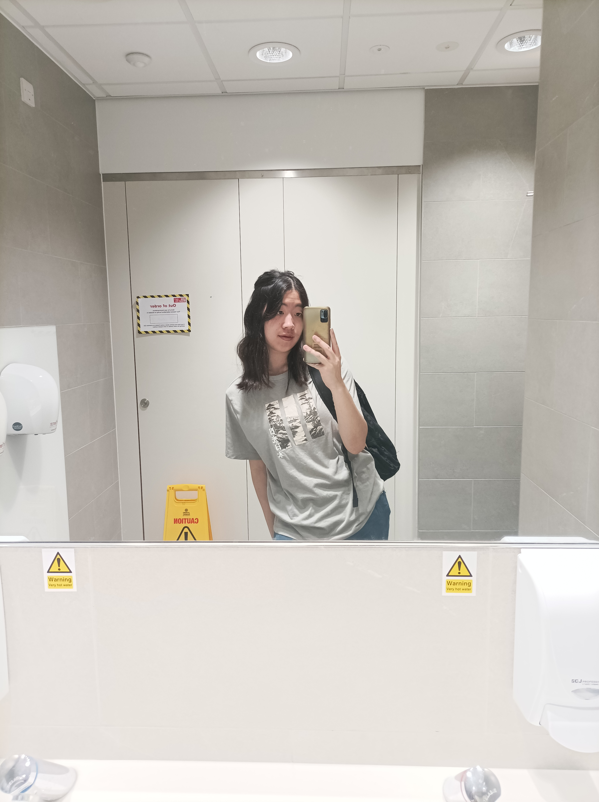
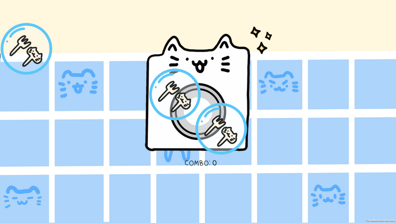
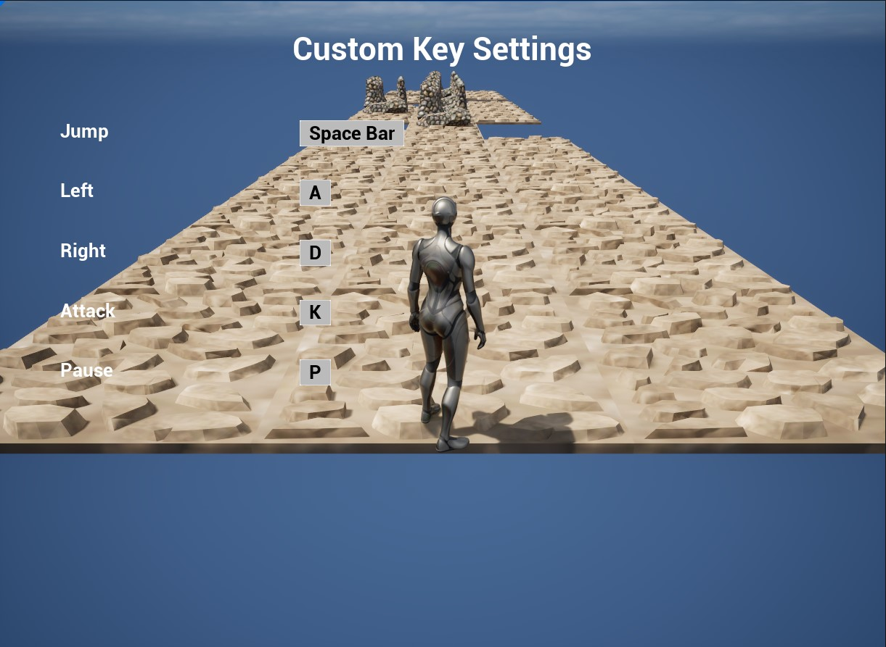
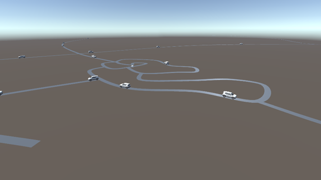

Game / Software Developer
Hello I'm Christy! I am a BSc (Hons) Games Technology graduate from the University of the West of England, with a strong interest in software engineering and interactive technology. Through my degree and personal projects, I have gained experience with C#, C++, Python, Unity, Unreal Engine and DirectX. My studies have given me a solid foundation in programming principles, software development and the technical aspects of creating interactive applications. I have participated in Global Game Jam for four consecutive years as the main developer in my team. This has given me experience working collaboratively, handling technical implementation and solving problems under time constraints. I particularly enjoy tackling technical challenges and learning how different systems work together. I am currently developing a personal game project independently. I am now looking for an opportunity to apply my knowledge to real-world projects and continue growing as a software engineer.

Rubbish Rumble is a fast-paced and party style collection game where competition and chaos are hand in hand. Designed for up to 4 players, the goal is simple : collect and deposit the most rubbish before the timer hits zero to claim the crown!
Fight it out across various hazard-filled maps and gain the upper hand through the use of dynamic power-ups (or just to ruin your friends day). If you are looking to fight for the win or just out to cause trouble, Rubbish Rumble delivers both through chaotic fun and friendly rivalry in every match.
This project was created during the Commercial Games Development module in UWE Games Tech.
Download this game for free in itch.io!
Itch.io Page | Trailer VideoA music game where players have to collect objects to be washed in flowing bubbles according to the music rhythm. Pop bubbles containing clothes and cutlery in front of the washing machine to wash the items. Avoid the red bubbles.
This project was created during Global Game Jam 2025.

Download this game for free in itch.io!
Itch.io Page | Global Game Jam Official Project SiteThis project demonstrates a Minecraft-style inventory system in Unity. Use WASD to walk and collect items. Press E to Toggle inventory. Use LMB to sort items. Use RMB to remove items.
This project was created during the Game Engine Programming module in UWE Games Tech.
Please find the project files on GitHub!
GitHubThis is a simple game project to demonstrate my programming skills in C++. It uses DirectX and Scarle Engine. The README.md carries the instruction for the game.
This project was created during the More Games in C++ module in UWE Games Tech.
Please find the project files on GitHub!
GitHubThis is an artefact created after a research project about creating a more inclusive experience for gamers to demonstrate a custom key input system for most types of input including adaptive game controllers. It is a simple runner game designed with the consideration of difficulties and fairness issues that players with physical disabillities faces.
This project was created during the Advanced Technologies: Inclusive Gaming module in UWE Games Tech.

Please find the project files on GitHub!
GitHubThis is my dissertation project, to create an AI traffic management system for traffic simulation in games like Cities: Skylines.
This project was created during the Comprehensive Creative Technologies Project module in UWE Games Tech.

Please find the project files on GitHub!
GitHub